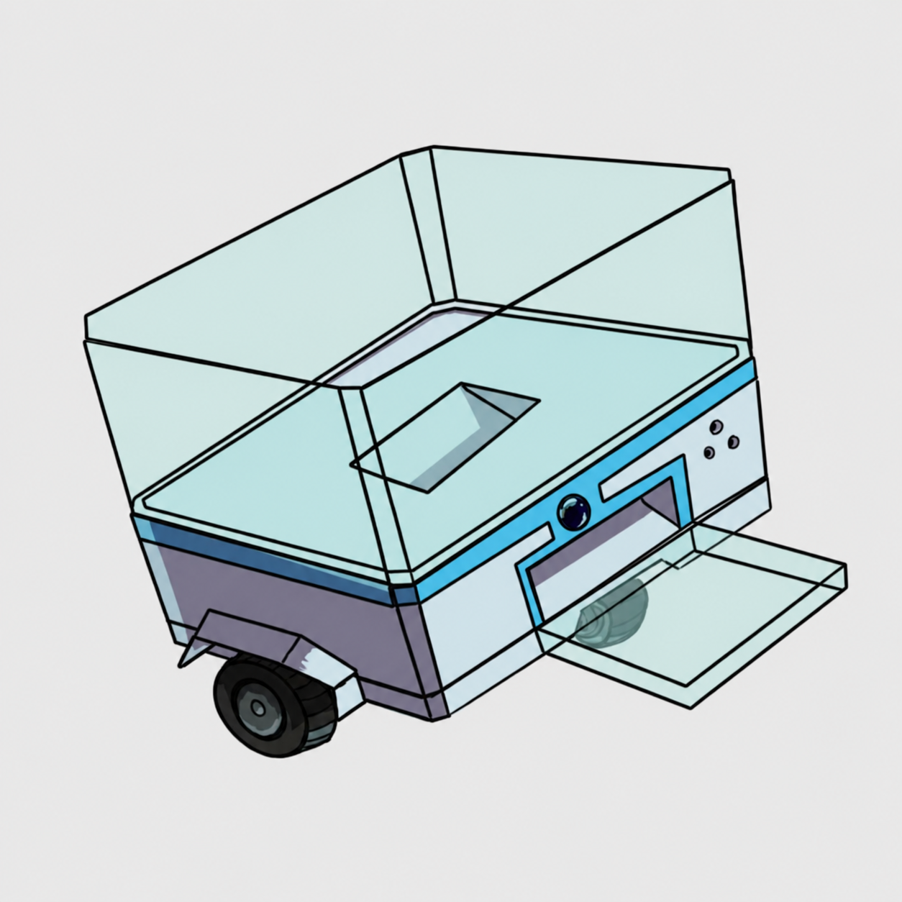
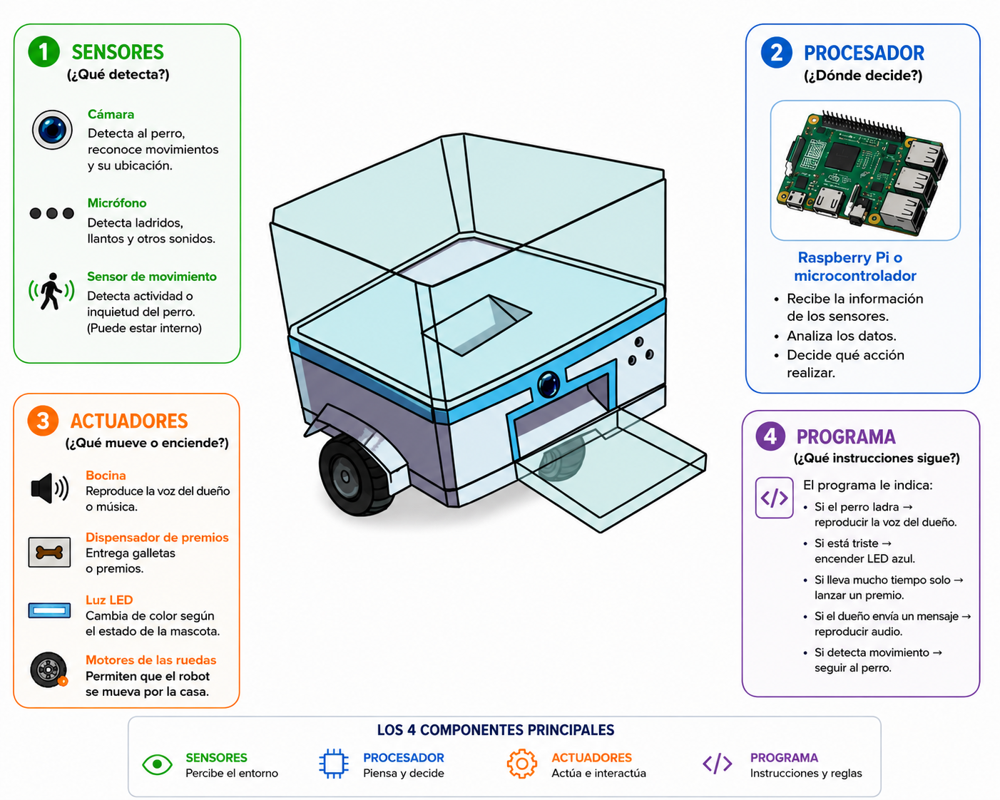

Robot doméstico inteligente que acompaña y monitorea a tu mascota cuando estás en la escuela o el trabajo. Detecta emociones, reproduce sonidos familiares y te notifica en tiempo real.

Los 4 componentes
Todo robot necesita cuatro partes fundamentales que trabajan juntas como un equipo. Aquí están los componentes del Don Croqueta 2.0 y su función.
Campo tecnológico
El Don Croqueta 2.0 no es solo un robot: pertenece a los campos más avanzados de la tecnología moderna.
El Don Croqueta 2.0 pertenece principalmente al campo del Internet de las Cosas (IoT), porque sus sensores están conectados a internet y envían información en tiempo real al celular del dueño, permitiéndole ver y escuchar a su perro desde cualquier lugar del mundo. El robot no funciona de manera aislada: forma parte de una red inteligente donde los dispositivos se comunican entre sí. La app del teléfono recibe alertas automáticas, y el dueño puede enviar mensajes de audio al robot para que los reproduzca, creando un canal de comunicación continuo entre persona, máquina y mascota.
La cámara utiliza reconocimiento de imágenes para identificar el comportamiento del perro y distinguir si está tranquilo, ansioso o jugando. El sistema toma decisiones automáticas sin que nadie se lo indique, aprendiendo con el tiempo los patrones de comportamiento individuales de cada mascota.
El Don Croqueta 2.0 integra hardware físico (motores, sensores, estructura mecánica) con software inteligente, siguiendo los principios clásicos de la robótica: percibir el entorno, procesar la información y actuar sobre él de forma autónoma y controlada.
Representación visual
El siguiente diagrama muestra los cuatro componentes del Don Croqueta 2.0 y cómo se conectan entre sí para formar el sistema completo.

Mini algoritmo
El Don Croqueta 2.0 sigue un conjunto de reglas lógicas: si detecta algo, entonces reacciona. Aquí están las 5 condiciones que guían su comportamiento (supera el mínimo de 3 requeridas).